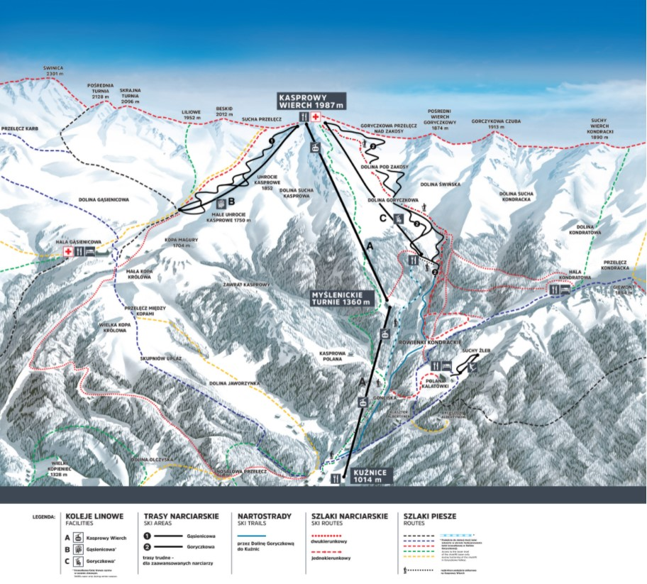
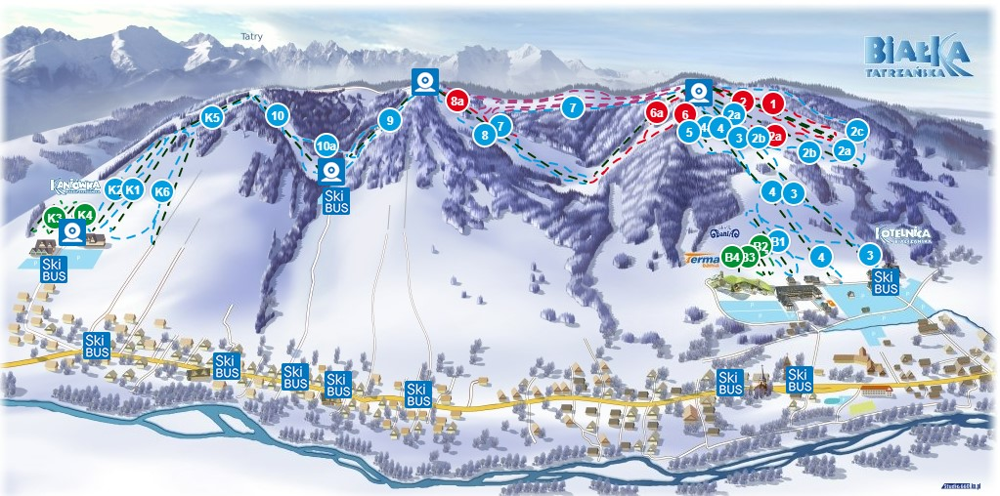
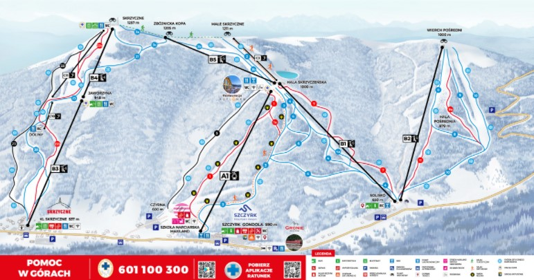

Najlepsze stoki narciarskie w Polsce
Kasprowy Wierch, Zakopane:
długość trasy : 5km
Jak wjedziemy na górę ?: wyciągiem kanapowym
Informacje na temat tego stoku

Szklarska Poręba:
długość trasy : 4km
Jak wjedziemy na górę ?: wyciągiem kanapowym
Informacje na temat tego stoku

Małe ciche:
Długość trasy : 1,25km
Jak wjedziemy na górę ?: wyciągiem kanapowym, lub orczykowym
Informacje na temat tego stoku

Kotelnica Białczańska, Białka Tatrzańska:
długość trasy : 1,35km
Jak wjedziemy na górę ?: Wyciągiem kanapowym
Informacje na temat tego stoku

Szczyrk:
długość trasy : 2,8km
Jak wjedziemy na górę ?: Wyciągiem kanapowym
Informacje na temat tego stoku
